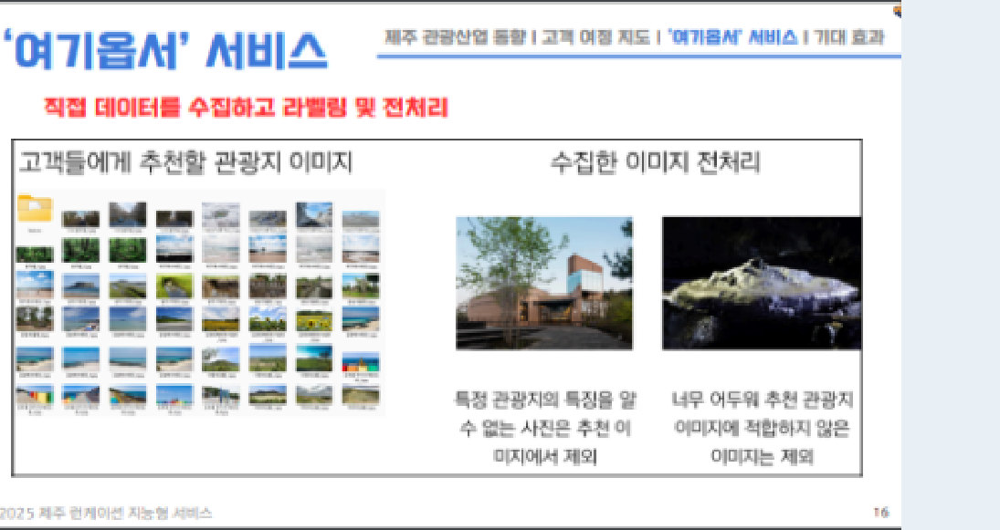

02
제주 런케이션 AI 해커톤 '여기옵서'
Overview
사진 한 장을 올리면 분위기가 비슷한 제주 관광지 Top-3를 추천하고, '저렴이' 가격 필터로 예산에 맞는 장소를 함께 보여주는 외국인 여행자용 웹 서비스입니다.
My Role
- 문제 정의 · 서비스 기획
- 이미지 크롤링 · 라벨링 · 전처리
- 피치덱 · 최종 발표
Team
- ResNet-18 모델 학습
- Django · SQLite · 카카오맵 구현
PProblem
제주 여행객 불만 1위는 비싼 물가 53.4%. 2023년 외국인 관광객 약 150만 명 중 70%가 아시아 출신입니다. 첫 방문 외국인은 정보가 많아도 분위기와 예산을 동시에 맞추는 장소를 찾기 어렵습니다 → 탐색 비용 문제로 정의.
AAction
- 페르소나 Nadine과 고객 여정 지도 설계
- 관광지 이미지 직접 수집 · 라벨링, 특징 없는 사진 · 어두운 사진 제외
- 모델 고도화를 고집하던 개발팀을 물가 불만 데이터로 설득해 가격 필터를 v1에 우선 탑재
RResult
- 본선 진출 · Django 웹 데모 완성
- 사진 Top-3 + 가격 필터 + 지도
- AI 전공 4명의 모델을 시장 → 고객 여정 → 서비스 → 기대효과 피치덱으로 번역해 직접 발표
SStack
PyTorchResNet-18 · GAPCosine SimilarityDjangoSQLiteKakao Map APIGit
→Implication
불만 1위와 직접 닿고 기간 안에 끝낼 수 있는 기능부터 v1에 넣었습니다. 데모 뒤 '비슷한 곳 ≠ 만족할 곳'이라는 한계가 보였고, 이것이 S-CURT 연구 질문이 됐습니다.
 메인 · 사진 업로드
메인 · 사진 업로드
본인 담당 · 데이터 수집 · 라벨링제주 여행객 불만 사항 · 프로젝트 보고서 시장조사
막대는 0 – 60% 축 기준. 여행 경비 만족도 3.16점으로 평가 항목 중 최저.
How it works · Scope Decision
사진 업로드원하는 분위기의 사진 한 장
›
CNN 특징 추출ResNet-18 + GAP → 코사인 유사도 Top-3
›
'저렴이' 필터인증 여부 · 평점 · 가격대 DB 필드
IN · v1사진 기반 Top-3 추천
'저렴이' 가격 필터
카카오맵 위치 표시
'저렴이' 가격 필터
카카오맵 위치 표시
NEXT실시간 대체 옵션
여행 기록 · 리뷰 재추천
다국어 · 교통 · 날씨 연동
여행 기록 · 리뷰 재추천
다국어 · 교통 · 날씨 연동